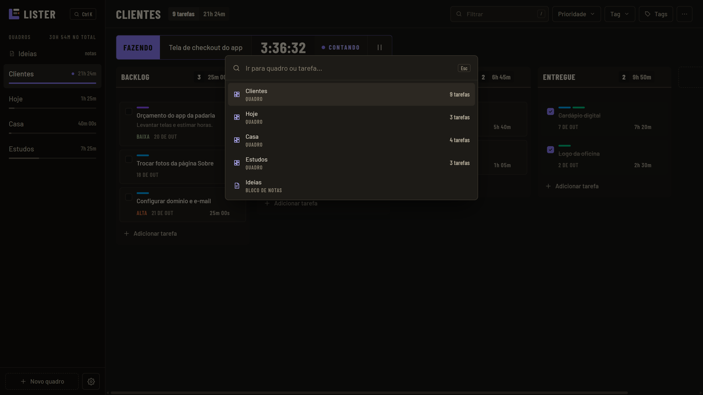
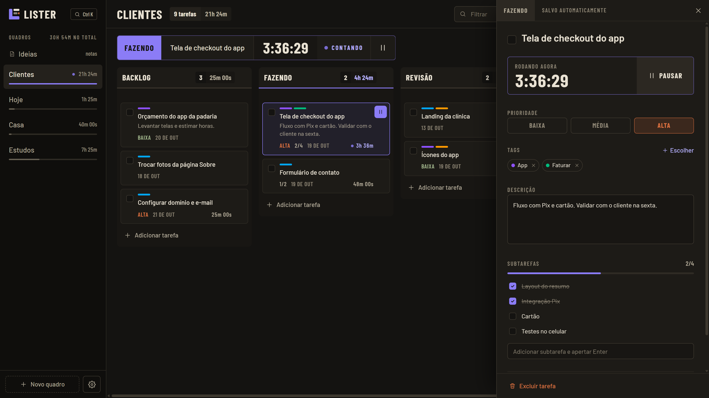
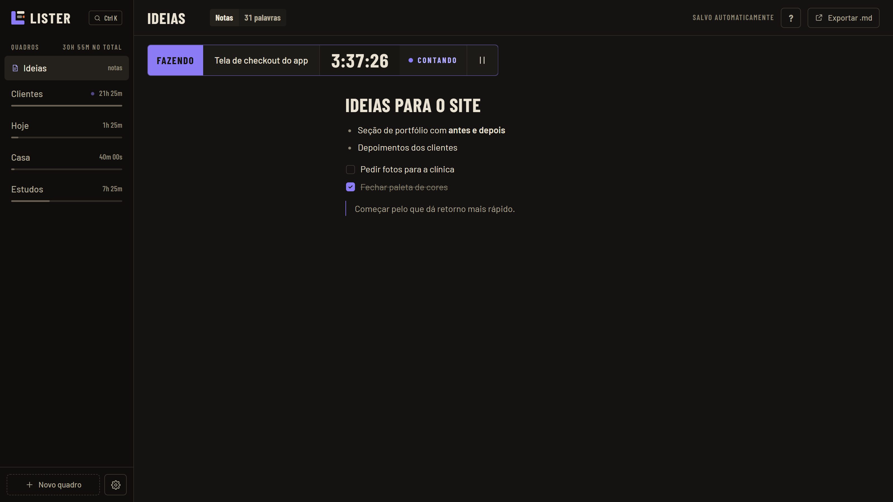
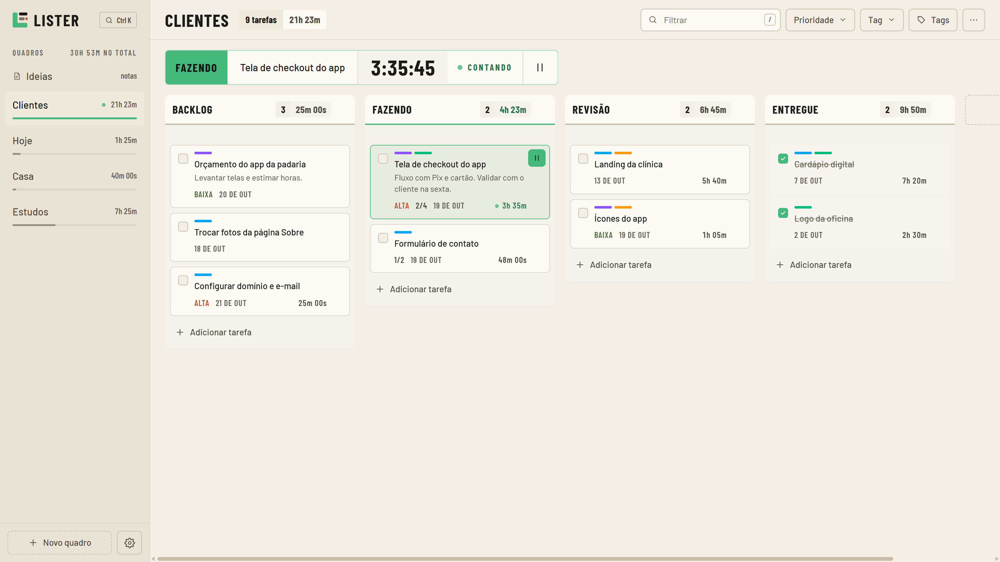

Experimente o cronômetro
Escreva qualquer tarefa acima e use o botão para pausar ou retomar. No app é o mesmo gesto: um clique no card, e o relógio aparece numa janela pequena que fica por cima de tudo.
Recursos
-
Paleta de comandosCtrlK
Pule para qualquer quadro ou tarefa pelo nome, sem tirar a mão do teclado.
-
Nova tarefaN
Cria uma tarefa na primeira coluna do quadro aberto. Arraste cards e colunas para reorganizar.
-
Filtrar o quadro/
Filtra por texto, prioridade e tag, e mostra a soma de tarefas e horas do que sobrou.
-
Timer flutuante
Ao dar play, uma janelinha fica sempre por cima e o quadro sai da frente. Pausa e retoma de lá mesmo.
-
Tags e subtarefas
Prioridade Baixa, Média ou Alta; tags em 17 cores; subtarefas com barra de progresso; tempo editável à mão.
-
Blocos de notas
Notas em markdown com checklists, ao lado dos quadros, exportáveis em .md.
-
Temas e fontes
Escuro ou claro, 7 cores de destaque e 5 fontes, incluindo a Atkinson Hyperlegible.
-
Skill para o Claude
Peça ao Claude para criar, mover ou concluir tarefas. Veja como.




Nenhum recurso com esse nome.
Um clique, o dia todo
- LocalSeus dados ficam no seu computador
- Sem contaAbre e usa, sem cadastro
- OfflineFunciona sem internet
- 3,5 MBInstalador para Windows x64
- AbertoCódigo no GitHub
- GrátisR$ 0, sem plano pago
Peça ao Claude
O Lister vem com uma skill para o Claude Code. Você pede em português e o Claude cria, edita, move e conclui tarefas, mexe em colunas e escreve nos blocos de notas. Ao clicar na janela do Lister, a mudança já está lá.
Para instalar, rode dentro do Claude Code:
/plugin install lister --marketplace stocaline/listerPrecisa de Python 3. Em versões anteriores à 2.1.275, use /plugin marketplace add stocaline/lister e depois /plugin install lister@lister. Ver o código da skill.
Adiciona “comprar café” no Hoje, prioridade alta
python lister.py add hoje "a fazer" "Comprar café" --priority highcriada: task-1792676112048-0.41Pronto, “Comprar café” está no topo de A fazer, no quadro Hoje, com prioridade Alta.
Feito por quem
usa todo dia
Por que existe
O Lister nasceu da frustração de escolher entre listas simples demais e sistemas engessados. A ideia era um quadro que abre na hora, fica aberto o dia inteiro e diz quanto tempo cada tarefa levou.
Quem fez
Richard de Souza Bercheli, desenvolvedor full stack. Usa o Lister para os projetos de clientes e para as coisas de casa, e cada versão sai desse uso.
Seu primeiro
quadro
Instale, abra e o Lister já traz um quadro com a coluna To Do. Dê play na primeira tarefa e o tempo começa a contar.